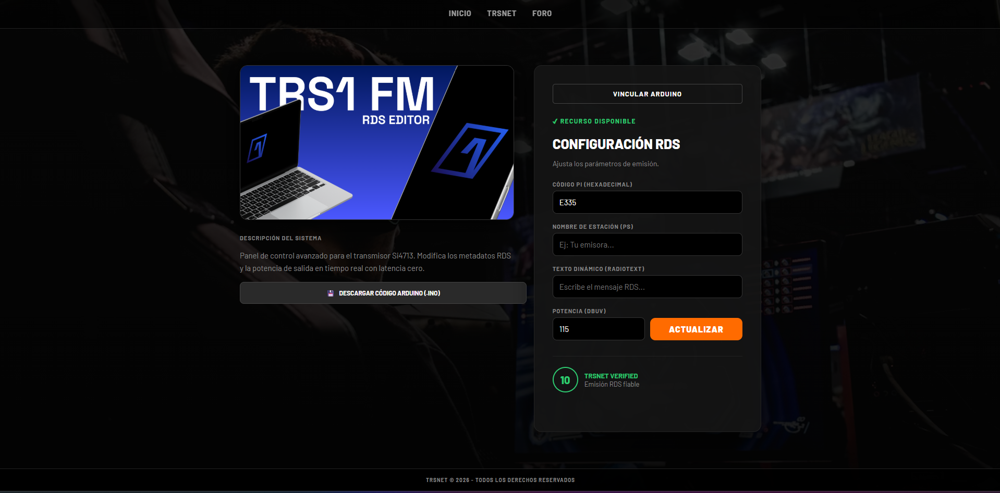

Visuales

Descripción
TRS1 FM | RDS EDITOR es la herramienta profesional para gestionar y editar información RDS (Radio Data System) en tiempo real. Diseñada específicamente para transmisoras SI4713, permite administrar metadatos, información de emisoras, textos dinámicos y más con una interfaz intuitiva y potente.
Con soporte completo para estándares RDS/RBDS, esta aplicación te proporciona control total sobre los datos que reciben tus oyentes. Perfecta para profesionales de la radiodifusión que buscan maximizar la información y mejorar la experiencia del usuario en receptores compatibles.
Últimas noticias de este juego
Hace tiempo
VERSION 1.20
Arreglo de que quedara colgado el transmisor.
Más Popular
VERSION 1.21
Completada la actualización con nuevas características y correcciones de errores.
Compatibilidad: PC
Instalación: Entrar a la web
Desarrollador:TRSNET ES
Fecha: 11 Marzo 2026
Género:Configuración